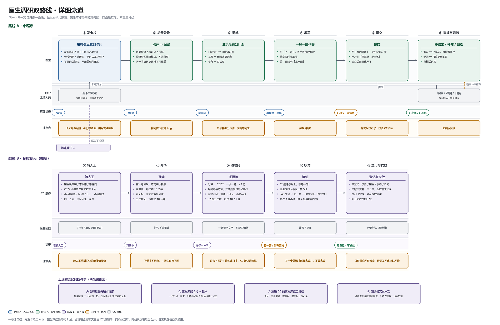

入口：企业微信小程序卡片 → 登录 → 调研模块。本页汇总需求说明、流程图与可点原型。
主路径，医生在微信小程序里完成
前提：企微不支持外部单聊机器人，只能人工问；侧边栏能挂面板，但读不到聊天内容

左边是 CC 在桌面版企业微信里选卡发送，右边是手机端同样的动作；医生在微信里收到的就是这张小程序卡片。
CC 在企微单聊里逐题提问，右侧实时显示 32 题完成度；答满才能点「登记完成」。点下方「下一步」推进对话。 注意：右侧「自动显示答案」是示意。真实侧边栏读不到聊天内容，实际只能由 CC 手动逐题打勾。